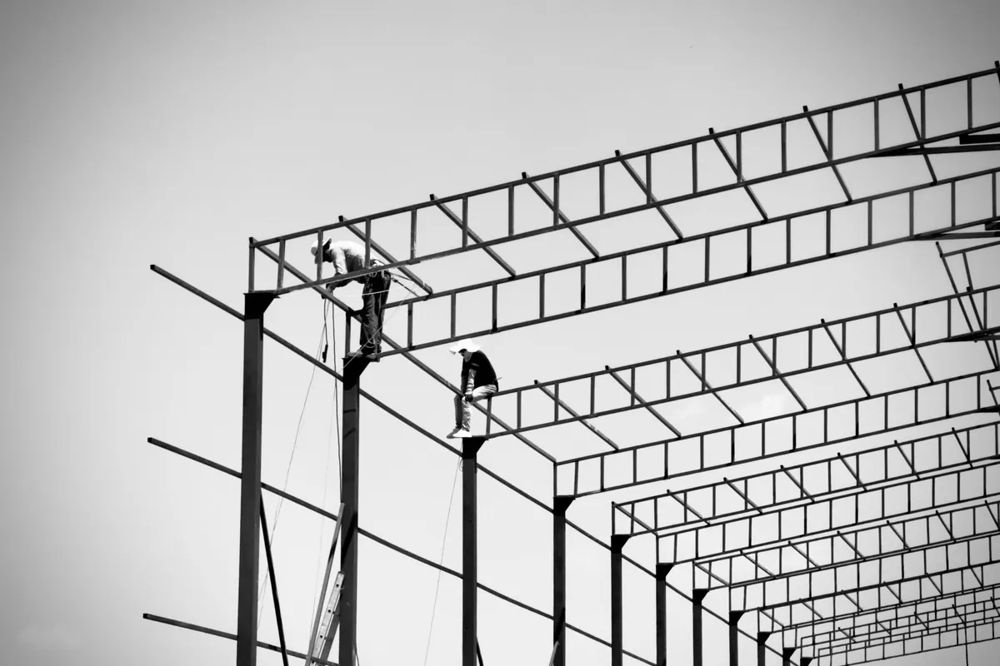
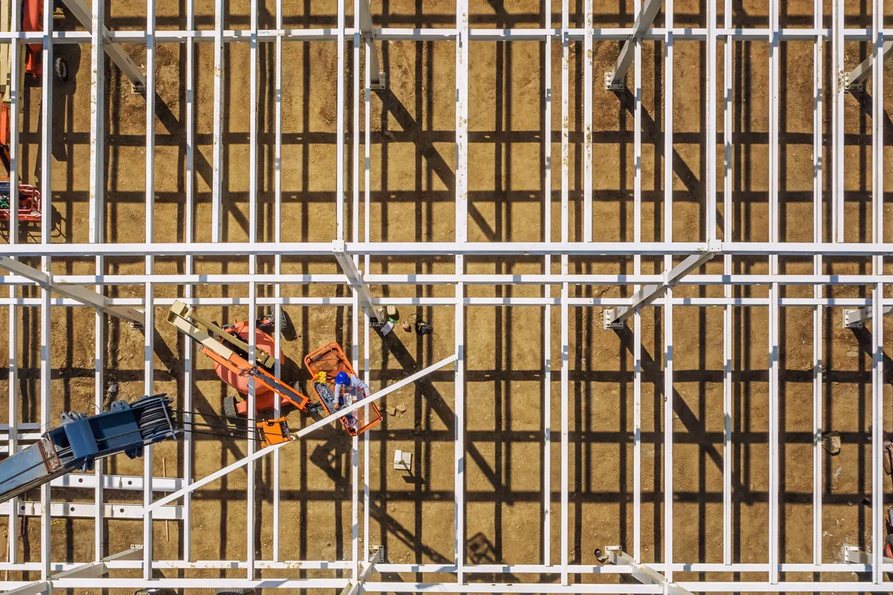
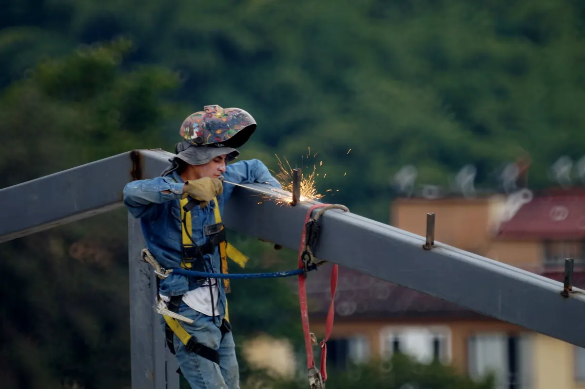
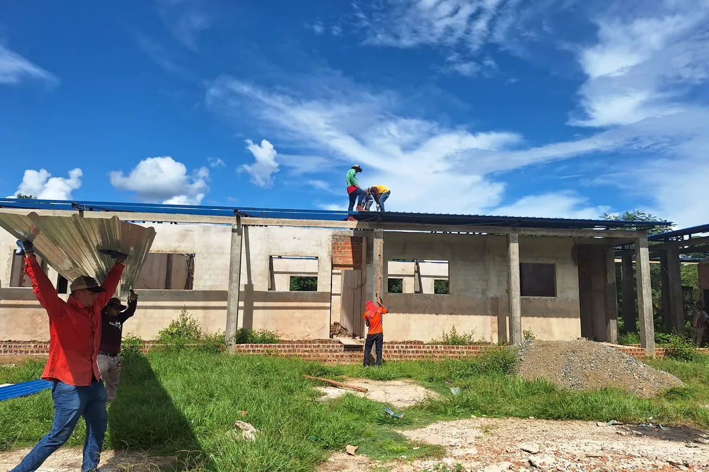

Uma empresa responde pela obra metálica inteira
A Axial Engenharia constrói em estrutura metálica do zero e chave na mão: estudo, projeto, compra do aço, fabricação, pintura, montagem, fechamentos, cobertura e entrega documentada — para indústria, comércio e condomínios de Vitória, Vila Velha, Serra, Cariacica e toda a Grande Vitória. Você assina um contrato, fala com um interlocutor e recebe a obra pronta, com um engenheiro assinando a ART.
Precisa só de uma etapa? Temos o projeto estrutural, o fornecimento de aço estrutural, a fabricação em oficina e a montagem em campo separados. A parte técnica de perfis, ligações e normas está no hub de estruturas metálicas em Vitória ES.
Por que contratar a Axial para a obra completa
Um contrato, um responsável técnico
Projeto, aço, fabricação, pintura, montagem e cobertura no mesmo escopo — ou só a etapa que você precisar.
Engenharia própria com ART
Engenheiro responsável técnico e ART registrada no CREA-ES em todo serviço, de projeto e de execução.
Cálculo pelas normas
ABNT NBR 8800, NBR 14762, NBR 6120 e NBR 6123 — com o vento do litoral capixaba entrando na conta.
Pintura pensada para maresia
Preparação de superfície e esquema de pintura ou galvanização especificados no projeto, não escolhidos na obra.
Solda qualificada e inspecionada
Procedimento e soldador qualificados com a AWS D1.1 como referência, e ensaios não destrutivos feitos pela própria empresa.
Entrega documentada
As-built, registros de montagem, certificados do aço e ART — o pacote que sustenta vistoria, seguro e venda do imóvel.

Contratar separado ou contrato único: quem paga pelo erro
Na obra fatiada, cada empresa entrega a própria parte — e o problema nasce onde uma parte encosta na outra. No contrato único, esse desencontro é problema interno do contratado.
| Ponto crítico | Contratando separado | Contrato único (turnkey) |
|---|---|---|
| Erro de interface (chumbador fora de posição, ligação que não fecha, perfil sem estoque) | Projetista, fornecedor, serralheria e montador empurram a culpa entre si | O contratado corrige, sem cobrar do cliente |
| Cronograma | Quatro cronogramas que ninguém coordena; guindaste parado esperando peça | Um cronograma, com fabricação correndo em paralelo à fundação |
| Aditivo | Cada desencontro vira pedido de aditivo | Aditivo só se o cliente mudar o escopo, com custo e prazo por escrito antes |
| Documentação | Cada um entrega a sua parte — ou não entrega | ART de projeto e execução, as-built e manual num pacote só |
| Interlocutor | Você gerencia quatro empresas | Um engenheiro responde pela obra inteira |
É essa transferência de risco que o modelo chave na mão vende — não só a conveniência de ter um telefone só.

O que entra no contrato chave na mão
Cada etapa tem um entregável que você recebe ou aprova antes de a obra seguir.
| Etapa | O que fazemos | Entregável |
|---|---|---|
| Viabilidade | Uso, área, vão, pé-direito, cargas especiais e restrições do terreno | Concepção estrutural e estimativa com premissas declaradas |
| Sondagem e fundação | Sondagem SPT, projeto de fundação, execução ou coordenação | Relatório de locação e cota dos chumbadores |
| Projeto | Cálculo pela NBR 8800 e NBR 14762, vento pela NBR 6123, detalhamento de fabricação | Projeto para aprovação e ART de projeto |
| Fornecimento de aço | Perfis, chapas, parafusos e chumbadores (ASTM A36, A572 ou o especificado) | Certificados do material com rastreabilidade |
| Fabricação e pintura | Corte, furação, solda qualificada, controle dimensional, pintura para o ambiente | Liberação de lote para embarque |
| Montagem | Plano de içamento, prumo, alinhamento e torque, equipe com NR-18 e NR-35 | Registro de prumo, alinhamento e torque |
| Fechamentos e cobertura | Telha simples, termoacústica ou painel, calhas, rufos, fechamento lateral e portões | Teste de estanqueidade e escoamento |
| Entrega | Vistoria final e correção de pendências | As-built, ART de execução e manual de manutenção |
Elétrica, SPDA, drenagem, combate a incêndio e exaustão podem entrar no mesmo contrato; quando ficam fora, o escopo diz isso por escrito e as interfaces já vêm previstas no projeto. Se houver equipamento de processo ou tubulação junto com a estrutura, a montagem industrial entra no mesmo cronograma.
Como trabalhamos: do primeiro contato à entrega da chave
Contato pelo WhatsApp
Você manda localização, área, uso e vão. Entregável: retorno do escopo no mesmo dia útil.
Visita e viabilidade
Engenheiro vai ao terreno e levanta restrições. Entregável: concepção estrutural e premissas.
Proposta de escopo fechado
Peso de aço estimado, pintura, telha, exclusões e cronograma. Entregável: proposta comparável, por escrito.
Projeto aprovado
Cálculo, fundação e detalhamento de fabricação. Entregável: projeto para sua aprovação e ART de projeto.
Fabricação com visita à oficina
Você vê peças, soldas e pintura antes do embarque. Entregável: certificados do aço e liberação de lote.
Montagem e cobertura
Base conferida, içamento planejado, telhado fechado. Entregável: relatórios com fotos e registros de montagem.
Entrega da chave
Vistoria final com você. Entregável: as-built, ART de execução e manual de manutenção.
Nada avança sem o seu aceite nos pontos de liberação, e qualquer alteração pedida vem antes com impacto de custo e prazo por escrito.
Tem terreno e uso definidos?
Mande localização, área e vão desejado pelo WhatsApp. O engenheiro responde com o escopo no mesmo dia útil.

Normas, solda e proteção contra maresia
- Solda: procedimento e soldador qualificados, com inspeção por ensaios não destrutivos feitos pela própria Axial.
- Corrosão: na faixa litorânea, pintura ou galvanização é especificada no projeto conforme a agressividade do ambiente — e a estrutura existente, em ampliação, passa antes pelo diagnóstico de patologias e corrosão estrutural.
- Campo: equipes com NR-18 e NR-35, linha de vida, ancoragem e plano de içamento.

Obras que entregamos chave na mão
- Galpão industrial ou logístico: vão livre, ponte rolante, docas e piso para empilhadeira — veja o galpão metálico e a construção de galpões e quadras com alvenaria, piso e aprovação na prefeitura.
- Loja e prédio comercial: estrutura aparente ou revestida, com prazo curto de abertura.
- Mezanino: em edificação existente, com verificação da fundação e dos apoios que já estão lá.
- Cobertura de quadra: escola, condomínio e clube — veja a cobertura metálica para quadra.
- Ampliação: anexo a galpão em operação, ligado à estrutura antiga, sem parar a atividade.
O que comparar numa proposta turnkey
Duas propostas de "obra completa" só se comparam quando descrevem o mesmo escopo.
| Item | A proposta deve trazer | Sinal de alerta |
|---|---|---|
| Premissas de projeto | Vão, pé-direito, cargas, vento e normas adotadas | Nenhuma premissa escrita |
| Aço | Peso estimado, qualidade do material e certificado | Só preço por metro quadrado |
| Pintura | Preparação de superfície, demãos e espessura de película | "Pintura anticorrosiva" sem especificação |
| Cobertura e fechamento | Tipo de telha, espessura e revestimento | "Telha metálica" genérica |
| Exclusões | Fundação, terraplenagem, instalações e aprovações que ficam fora | Nenhuma exclusão listada — a diferença vira aditivo |
| Responsabilidade técnica | Engenheiro responsável, ARTs emitidas e documentos de entrega | Sem ART ou sem as-built |
| Cronograma e medição | Prazo por etapa, medição por entrega verificável, regra para alterações | Medição por percentual estimado |
Para entender o que a assinatura do engenheiro cobre, veja responsabilidade técnica com ART.
O que mandar para receber o orçamento
- Endereço do terreno e planta ou matrícula, se tiver;
- Uso previsto e área aproximada;
- Vão livre e pé-direito desejados;
- Cargas especiais: ponte rolante, mezanino, equipamento na cobertura;
- Sondagem ou projeto, se já existirem;
- Prazo desejado para ocupar.
Não tem tudo? Mande o que tiver — fotos do terreno já ajudam a começar.
Perguntas frequentes sobre obra metálica chave na mão
Quanto custa uma obra em estrutura metálica chave na mão?
Depende do peso de aço, do vão, do pé-direito, das cargas, do tipo de cobertura e fechamento, da fundação e do que entra no escopo. Por isso não passamos preço por metro quadrado sem ver a obra: mande localização, área, uso e vão pelo WhatsApp e voltamos com o escopo e as premissas da proposta, com peso de aço estimado e a lista do que fica fora.
Contrato único sai mais caro do que contratar cada etapa separadamente?
Somando propostas isoladas, a obra fatiada pode parecer mais barata no papel. A diferença aparece depois, nos aditivos de interface: perfil substituído, ligação redetalhada, chumbador fora de posição, guindaste parado esperando peça. No contrato único esse risco é do contratado, e o custo final fica mais perto do preço contratado.
Qual é o prazo de uma obra metálica completa?
Depende do tamanho da obra, da disponibilidade de aço, da fundação e das aprovações, por isso não prometemos número de dias antes de ver o escopo. A proposta traz cronograma por etapa, e parte delas corre em paralelo: a fabricação em oficina avança enquanto a fundação é executada.
A fundação também entra no contrato?
Pode entrar. Coordenamos a sondagem, projetamos a fundação a partir das reações da estrutura e executamos ou acompanhamos a execução. Se o cliente preferir contratar a fundação com terceiro, a coordenação e a conferência de locação e cota dos chumbadores continuam conosco antes de liberar a montagem.
Já tenho projeto estrutural. Vocês fabricam e montam?
Sim. Verificamos o projeto recebido, fazemos o detalhamento de fabricação quando ele não existe e assumimos fornecimento, fabricação, pintura e montagem. Também dá para contratar só uma etapa — projeto, fabricação ou montagem — sem o pacote completo.
Vocês atendem obra pequena e fora de Vitória?
Sim. Atendemos de mezanino e cobertura a galpão completo. A sede fica em Vila Velha, com atendimento em toda a Grande Vitória — Vitória, Vila Velha, Serra, Cariacica, Viana, Guarapari e Fundão — e também em Anchieta, Aracruz e Linhares.
Que garantia e que documentos recebo no fim da obra?
Pelo art. 618 do Código Civil, o construtor responde por 5 anos pela solidez e segurança da obra. Na entrega você recebe ART de projeto e de execução registradas no CREA-ES, projeto as-built, certificados do aço, registros de inspeção de solda, de pintura e de montagem e manual de manutenção.
Construtora de estrutura metálica na Grande Vitória
Obra metálica chave na mão para indústria, comércio e condomínios da região:
Quer a obra com um só responsável?
Mande terreno, uso e vão. Voltamos com concepção, escopo fechado e a lista do que fica fora.